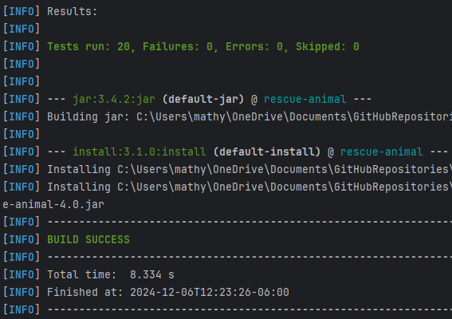
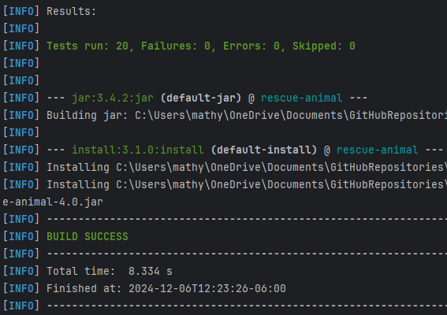
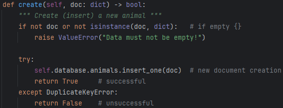
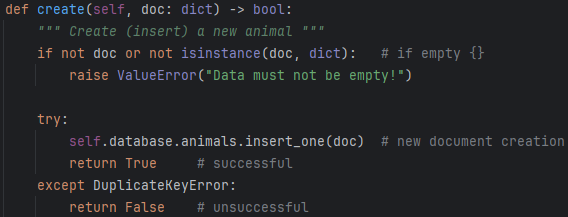

UI/UX | Native Mobile | Full-Stack Web | AI/ML | Technical Sales
Overview
I'm a Software Engineer and Product Designer with a B.S. in Computer Science (3.99 GPA, Summa Cum Laude) — and a background that spans both sides of the table: top-ranked outbound B2B sales for Fortune 500 clients, years in technical support, and a deep obsession with building software people actually love. I bridge engineering depth with clear, human communication to deliver solutions that are robust, accessible, and user-friendly across the full product lifecycle.
Check out my Android app below.
Flick (Android)
Designer/Engineer: Matthew Pool
Synopsis
Flick is a vertical video app similar in style to TikTok but with an added feature: a single sideways swipe reveals videos with significant similarity to the current video you are watching.
Visual and auditory feedback educates users on app functionality and navigation, ensuring an optimal experience on the first launch.
Users interact via fire (like) and poop (dislike) icons, with video ID, view duration, and preference data uploaded to Firestore.
The user can use basic gestures to increase playback speed or pause and unpause the video.
After an initial warmup period, the vertical feed operates on an intelligent cycle that prioritizes serving videos predicted to generate the highest engagement from that user.
The recommendation engine tokenizes Archive.org metadata and employs cosine similarity calculations weighted by view time and like/dislike ratios.
Random content is interspersed to facilitate content discovery beyond this algorithm.
The app prebuffers two upcoming videos by default, reducing to one when a qualified similar video exists at the current index and needs to be preloaded.
A history index tracks the last viewed video, enabling users to instantaneously recover from accidental swipes.
Comprehensive system design documentation with UML diagrams
UMLSDDArchitecture
Security Audit & Remediation
Financial software vulnerability assessment with OWASP compliance
JavaSpring BootOWASPCryptography
Agile & Scrum Leadership
Scrum Master experience managing development teams
Scrum MasterJiraSDLCLeadership
Algorithmic Optimization
Custom merge sort implementation with Big O analysis
C++AlgorithmsData Structures
Unit Testing
JUnit 5 test suite with comprehensive coverage
JavaJUnit 5TDDMaven
Product Design
Mobile and web app design with wireframes and mockups
UX DesignWireframesMockups
Refactoring: Rescue Animal System
This project involved taking a legacy Java command-line application - originally written early in my CS degree - and modernizing it with industry-standard practices.
Challenge: Modernizing a Legacy Application
The original software was a fragile command-line tool for tracking rescue animals. It lacked persistence, had no input validation, and used inefficient data structures.
This is a brief summary of the changes implemented in this poor, HOPELESS application.
None taken. No offense, "Past Me".
But wait! Is there yet a shimmer of hope remaining after all...
Optimized Convoluted Deep Neural Network (CDNN) model for image recognition, experimenting with hyperparameters to balance accuracy and training efficiency
Created and interacted with various databases and datatypes
Developed Python script using pandas, matplotlib, numpy, and ploty to analyze a NASA dataset of global temperature deviations and graph a curved trend line for the plotted points
Java, Spring Boot, OWASP ZAP, Cryptography (AES/SHA)
Vulnerability Assessment: Audited a RESTful API using OWASP Dependency-Check, identifying critical flaws such as hardcoded credentials in DocData.java and potential SQL injection points.
Remediation Engineering: Refactored the codebase to implement AES-256 encryption for data at rest and SHA-256 hashing for checksum verification.
Secure Configuration: Enforced HTTPS/TLS on port 8443 and upgraded legacy Spring Boot dependencies to patch known CVEs (e.g., CVE-2022-22965).
Compliance: Aligned software architecture with GDPR, SOX, and HIPAA standards by implementing proper access control and audit logging.
Summary of findings from the Manual & Static Analysis phases
Agile Project Management & Scrum Leadership
Scrum Master, Jira, SDLC, User Stories, Team Leadership
The Role: As Scrum Master for the SNHU Travel App, I led the development team through a transition from Waterfall to Agile
Strategic Pivot: Successfully managed a major scope change mid-development—shifting the product focus to "Detox and Wellness" and redesigning the GUI from a list view to a slideshow—without disrupting team velocity.
Process Optimization: Utilized Jira for backlog grooming and tracking. Implemented "Planning Poker" for estimation, resulting in more accurate velocity forecasting and reduced technical debt.
Team Coaching: Enforced the "Definition of Done" (DoD) and fostered a culture of transparency, effectively removing blockers identified during daily standups.
Custom Algorithm: Implemented a manual, recursive Merge Sort ($O(n \log n)$) to optimize sorting performance for large datasets, replacing a previous $O(n^2)$ Insertion Sort.
Data Structures: Architected a system using vector of custom Course structs to handle dynamic data loading from CSV files.
Memory Management: Managed object creation and vector resizing manually to ensure efficient memory usage during the file parsing phase.
Java, JUnit 5, Test-Driven Development (TDD), Maven
Overview: Developed a backend service module for scheduling system appointments, featuring strict data validation and in-memory data management.
Defensive Programming: Implemented robust validation logic to enforce business rules, such as rejecting appointments with past dates or null IDs.
Automated Testing: Engineered a comprehensive JUnit 5 test suite achieving high code coverage. Utilized @BeforeEach for test fixture setup and assertThrows to verify exception handling for invalid inputs.
Edge Case Handling: Specifically targeted boundary conditions—testing maximum ID lengths, empty descriptions, and "Y2K" past-date scenarios to ensure system stability.
100% Pass Rate: Verifying validation logic and exception handling


 



 
